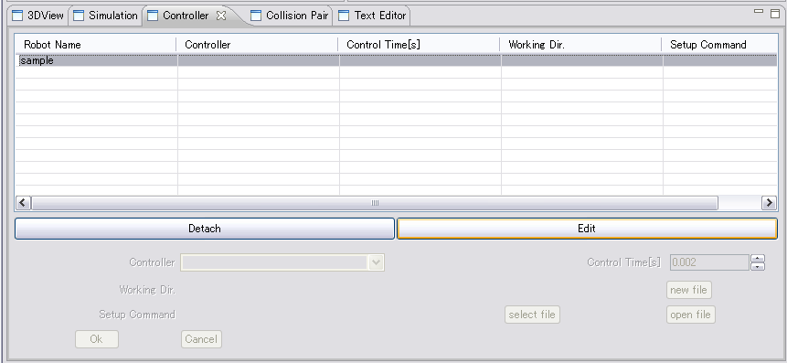
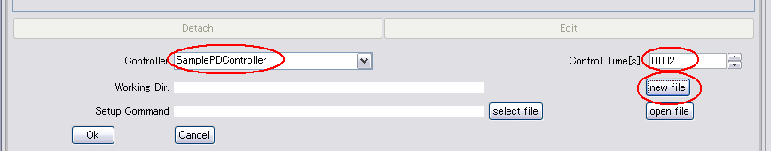
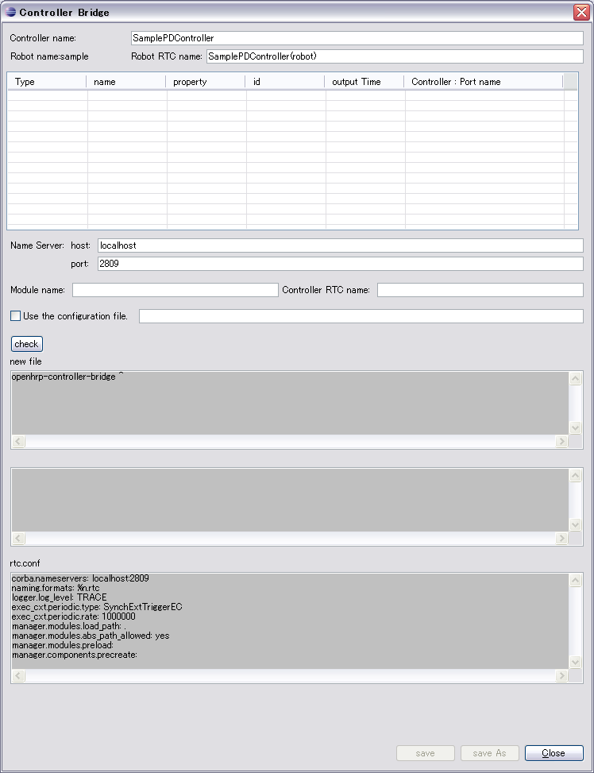
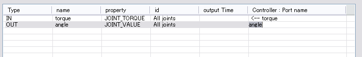
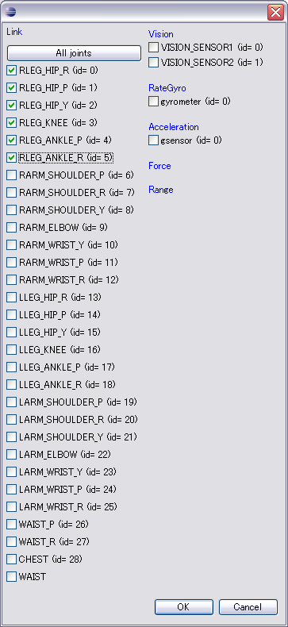
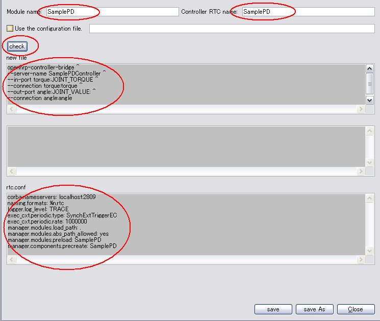
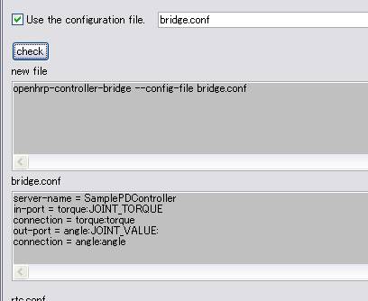

概要コントローラの動作には、RTコンポーネントとしての設定を記述するrtc.confファイルと、コントローラブリッジとRTコンポーネントとの接続設定を記述したスクリプト（バッチ）ファイルが必要です。 コントローラブリッジは、シミュレーション対象のロボットと各OpenRTMコンポーネント間の入出力を介するプロセスで、ロボットの入出力用のRTコンポーネントも作成します。 ここでは、２つのファイルの作成方法を説明します。 GUIを利用して作成する方法Controller ViewでロボットのリストからSampleを選択し、Editボタンを押します。

Controllerの名前とコントローラの動作間隔を設定し"new File"ボタンを押します。

ファイル設定用のダイアログが開きます。コントローラの名前は、Controller Viewで設定した名前と一致していなければならないので、既に表示されています。

制御対象のロボットの入出力ポートを設定します。

idのセルを選択すると、id編集用のダイアログが開きます。ロボットのリンク名、センサ名が表示されるので、チェックを入れてください。

Module NameとController RTC Nameを設定し、"check"ボタンを押してください。

接続設定は、別ファイルに保存することもできます。
 "Save as"ボタンを押してファイルを選択し、内容を保存します。本ドキュメントの例ではmySamplePDディレクトリにSamplePD.sh(.bat)として保存してください。 "Close"ボタンを押してDialogを閉じてください。 テキストエディタを利用して作成する方法
２つの設定ファイルは、テキスト形式ですので、使い慣れたエディタを用いて編集することができます。 rtc.conf
rtc.conf はこのコントローラブリッジを起動する際のカレントディレクトリに配置します。 環境に合わせてネームサーバの場所を記述します。 corba.nameservers: localhost:2809 ログファイル作りの有無を設定します。
logger.enable:YES ログファイルの作り先（パス）と名前形式を設定します。以下の例のようにパスを直接記述することも可能です。 logger.file_name: D:\\Temp\\rtc%p.log ログレベルの設定です。 logger.log_level: TRACE モジュールファイル名と、コンポーネント名を設定します。 manager.modules.preload: SamplePD manager.components.precreate: SamplePD 以下の内容は基本的には変更しないでください。 naming.formats: %n.rtc manager.modules.load_path: . exec_cxt.periodic.rate: 1000000 manager.modules.abs_path_allowed: yes exec_cxt.periodic.type: SynchExtTriggerEC RTコンポーネントの設定オプションに関する詳しい説明は、OpenRTM マニュアルの コンフィギュレーション で確認してください。
※ なお、"OpenHRP3/sample/controller/SamplePD/rtc.conf" に設定ファイルのサンプルがありますので、それをコピーし、変更を行って使用してください。
ファイル内容はいずれの場合も同じです。 コントローラブリッジ用設定ファイル
各コンポーネント毎に実装を分離する目的は、開発における保守性・可搬性の向上です。
ここでは、コントローラブリッジとコンポーネントとの接続設定を説明します。 SamplePD.sh#!/bin/sh openhrp-controller-bridge \ --server-name SamplePDController \ --out-port angle:JOINT_VALUE \ --in-port torque:JOINT_TORQUE \ --connection angle:angle \ --connection torque:torque
server-name：OpenHRPコントローラの名前を指定します。
out-port：出力ポート名と出力するプロパティの順にコロンで区切って指定します。
in-port：入力ポート名と入力するプロパティの順にコロンで区切って指定します。
connection：ポートどうしを接続します。モデル側入出力ポート名、コントローラ側入出力ポート名の順にコロンで区切って指定します。 起動オプションの詳細、その他の起動オプションについては「コントローラーブリッジ使用マニュアル」をご覧ください。 |